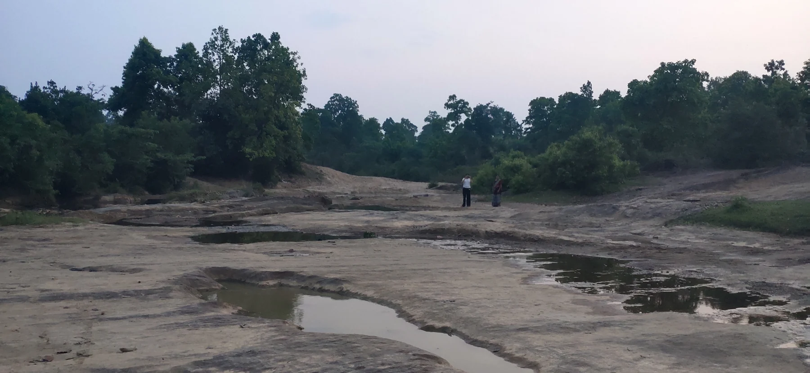

ENVIRONMENT · COMMUNITIES · ORAL HISTORIES
Kiul Nadi
Independent research · Book in progress · 2026–present
A river is more than the water that runs through it.
I am writing narrative non-fiction about the ecological, cultural and socioeconomic life of the Kiul River system in Jharkhand. In Giridih’s Tisri block, my fieldwork follows drainage networks, community practices and changes linked to deforestation and sand mining.
Oral histories sit alongside government records and community conservation accounts, helping me connect lived experience with documentation.
- Approach
- Field research, oral histories & documentary research
- Focus
- River ecologies, livelihoods & cultural life